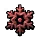
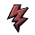
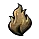
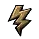

| よみがな | マップ | マップボス | 耐性/防御 | アクト | 元エリア | 元ボス | 特徴 |
|---|---|---|---|---|---|---|---|
| なんぱ | 難破Castaway | 沈没艦隊のトーレック | 4 | 旅の終わり | ハートリン船長 | イカリ落とすボス | |
| はなさくのはら | 花咲く野原Blooming Field | ブラッククロウ | - | 1 | 狩場 | クロウベル | 鐘を持って２回逃げる |
| さばんな | サバンナSavannah | ハイエナロード、カエドロン | 2 | ヴァスティリ郊外 | ラスブレイカー | アクト２初めのボス | |
| ようさい | 要塞Fortress | 忘れ去られた囚人、ピラシャ |  | 2 | 裏切り者の通路 | 裏切り者、バルバラ | ジンのバリャをドロップする |
| けいむしょ | 刑務所Penitentiary | 死の権化 | 1 | オガム村 | 処刑人 | 首ちょんぱの処刑する人 | |
| うしなわれたとう | 失われた塔Lost Towers | 羽を持つ疫病、チェツァ | 4 | モズの島 | 空のスカージ | 出血ゲロ鳥 | |
| すなのみさき | 砂の岬Sandspit | サンドストライダー |  | 4 | ワーカパヌ島 | 偉大なる白きもの | サメ |
| かじろ | 鍜治炉Forge | 巨大な守護者、ヴァストウェルド |  | 2 | タイタンの洞窟 | 巨像、ザルマラス | 巨人の像 |
| いおうのどうくつ | 硫黄の洞窟Sulphuric Caverns | 骨の巨像, 大穴の領主 | 2 | 骨の穴 | 古代の戦象、エクバブ 死の王、イクタブ | 象と魔術師 | |
| どろぬま | 泥沼Mire | 冬の笑声、リオナ | 1 | クリアフェル | 腐りし群れのベイラ | 街からすぐの氷ボス | |
| しんりんちたい | 森林地帯Woodland | 肥大したマータ, 怨嗟のコルム | 1 | 川岸 | 腐乱した粉屋 | 粉屋 | |
| おすいだめ | 汚水溜めSump | 萎れた老婆、ブラッカ | 3 | アザク湿原 | 沼地の魔女、イグナグドゥク | 暴走スピリット | |
| やなぎ | 柳Willow | 苦悩する者、コンナル | 1 | 永遠なる帝国の墓地 | 終わりなき悲嘆のラクラン | 墓場で変身ボス | |
| みさき | 岬Headland | 堕ちし息子、ハスク | 2 | 埋葬された神殿 | 見捨てられた息子、アザリアン | ケス奥地 四隅に火鉢 | |
| そびえるさんみゃく | そびえる山頂Lofty Summit | 良心なきオロトン | 3 | ジクアニのマシナリウム | 亡霊、黒き顎 | 炎使いの大斧 | |
| きょうどうぼち | 共同墓地Necropolis | 黒の法務官、ティコ | 1 | 法務官の霊廟 | 永遠なる法務官、ドレイヴン | 霊廟での夫ボス | |
| ちかのうこつどう | 地下納骨堂Crypt | 信仰の真似事、メルトワックス | 1 | オガムの邸宅 | 生ける儀式、キャンドルマス | 屋敷の石像 | |
| じょうきせん | 蒸気泉Steaming Springs | サーペントクィーン、マナッサ | 2 | ケス | 大蛇の女王、カバラ | ケスの蛇ボス | |
| ろうしゅつ | 漏出Seepage | 真菌のベヒモス | - | 1 | 根の穴 | 腐ったドルイド | キノコ |
| かわべ | 川辺Riverside | 頭砕き、ゼコア | 3 | ジャングルの遺跡 | マイティ・シルバーフィスト | ワンパンゴリラ | |
| そうげん | 草原Steppe | 反逆のラストロード、ゴゼン | 1 | 赤き谷 | 錆の王 | 赤き森のボス | |
| みなも | 水面Slick | 地獄の技師、ヴォリック | 2 | マウドゥン鉱山 | 恐怖の技師、ルジャ | グレネードボス | |
| くものもり | 蜘蛛の森Spider Woods | 憎むべき森、ルートグラスプ | 1 | グレルウッド | ブランブルガスト | カオス植物 | |
| こつずい | 骨髄Marrow | 骨の暴君、ザー・ワリ | 2 | デシャールの尖塔 | 冒涜者、トール・ガル | 巨大ドクロ | |
| ヴぁーるのとし | ヴァールの都市Vaal City | ヴァイパー・ナプアツィ | 3 | ウトザール | ヴァイパー・ナプアツィ | ||
| ぶらっどうっど | ブラッドウッドBloodwood | 動く大地、ゴリアン | 1 | 泥の巣穴 | デヴァウラー | 地面に潜るワーム | |
| せのーて | セノーテCenotes | 空を見る者、バーラク |  | 3 | カオス寺院 | 空を見る者、バーラク | 竜巻鳥 |
| かくれいわや | 隠れ岩屋Hidden Grotto | 骨の暴君、ザー・ワリ | 2 | デシャールの尖塔 | 冒涜者、トール・ガル | 巨大ドクロ | |
| けいこく | 渓谷Ravine | 灼熱の守護者、テツカトル | 3 | ジクアニの聖所 | コアの番人、ジコアトル | 壁からの手？がいっぱい | |
| こうざんのおね | 高山の尾根Alpine Ridge | 炎の誓い、イグナティア, 霜舌のゲリダ | 幕間 | 焼け焦げた農場 | 黒き火葬のヘルドラ · 白き死衣のイゾルデ | 氷と炎 | |
| よちょう | 予兆Augury | 頂点、グレッサー・クル | 3 | キメラの湿地 | キメラ、ザイクルシアン | キメラ | |
| かんごく | 監獄Bastille | フロストベイン、ヴェイナー | 幕間 | 狼の砦 | 恐怖の看守、オスウィン | 氷版アザリアン、地面から針 | |
| おがわ | 小川Creek | 憎む者、ティアニー | 1 | 川岸 | 腐乱した粉屋 | 粉屋 | |
| しんくのきし | 深紅の岸Crimson Shores | 残り火より生まれし者、ヴォルカー | 2 | セケマの試練 | 大地を砕く者、ラトルケージ | セケマのボス１ | |
| ふはい | 腐敗Decay | 真菌のベヒモス | - | 1 | 根の穴 | 腐ったドルイド | キノコ |
| こうりょうち | 荒涼地Deserted | 大穴の領主 | 2 | 骨の穴 | 死の王、イクタブ | 象が居ない魔術師 | |
| ぐりむへぶん | グリムヘブンGrimhaven | 恐ろしき妻、サフィラ | 1 | 妃の墓所 | 法務官の妻、アシニア | 墓所の婦人ボス | |
| すあな | 巣穴Hive | 真菌のベヒモス | - | 1 | 根の穴 | 腐ったドルイド | キノコ |
| ごうか | 業火Inferno | [DNT-UNUSED] Dog Trader | - | ||||
| こうどう | 坑道Mineshaft | 地獄の技師、ヴォリック | 2 | マウドゥン鉱山 | 恐怖の技師、ルジャ | グレネードボス | |
| おあしす | オアシスOasis | 永期なるイシュタロス | 2 | ハラニの門 | 復活した王、ジャマンラ | ハラニの門でのジャマンラ | |
| しおだまり | 潮だまりRockpools | 飽くなき者、ブルゴール | 4 | 火山地帯 | キンの領主、クルトォグ | 火山での巨人 | |
| しずむせんとう | 沈む尖塔Sinking Spire | 守護者、ストームゴア | 幕間 | 侵蝕の峡谷 | 守護者、ストームゴア | 雷の黒き顎 | |
| てつのじょうさい | 鉄の城塞The Iron Citadel | ジオノール伯爵, 堕落した狼、ジオノール | 1 | オガムの邸宅 | ジオノール伯爵, 堕落した狼、ジオノール | １章ボス | |
| いしのじょうさい | 石の城塞The Stone Citadel | 宮廷魔術師、ドリヤニ, ドリヤニの偉業 | 3 | 黒の間 | 宮廷魔術師、ドリヤニ, ドリヤニの偉業 | ３章ボス | |
| どうのじょうさい | 銅の城塞The Copper Citadel | アボミネーション、ジャマンラ | 2 | ドレッドノートの前衛 | アボミネーション、ジャマンラ | ２章ボス | |
| ヴぁーるのむら | ヴァールの村Vaal Village | [DNT-UNUSED] Dog Trader | - | ||||
| さびのくぼち | 錆の窪地Rustbowl | 反逆のラストロード、ゴゼン | 1 | 赤き谷 | 錆の王 | 赤き森のボス | |
| ひきなみ | 引き波Backwash | 不快な者、ヤオタ | 3 | 汚物の頂 | 汚物の女王 | ||
| まいそうのぬま | 埋葬の沼Burial Bog | 邪悪な棘、グラッジラッシュ | 3 | 砂原の沼地 | ルートドレッジ | ゾンビ召喚の木 | |
| しっちたい | 湿地帯Wetlands | ハイエナロード、カエドロン | 2 | ヴァスティリ郊外 | ラスブレイカー | ケンタウロス？ | |
| たいようのしんでん | 太陽の神殿Sun Temple | 太陽の預言者、トンキ | 3 | コペク神殿 | 太陽の大祭司、ケツーリ | ||
| すいろ | 水路Channel | 堕ちし息子、ハスク | 2 | 埋葬された神殿 | 見捨てられた息子、アザリアン | ケス奥地 四隅に火鉢 | |
| かじば | 鍛冶場Molten Vault | 生ける炉、ガルザル | 3 | 溶融した宝物庫 | 鍛造場主、メクトゥル | 溶岩巨人 | |
| こうじょう | 工場The Assembly | 灼熱の守護者、テツカトル | 3 | ジクアニの聖所 | コアの番人、ジコアトル | ||
| だいち | 台地Mesa | 砂丘の住人、カラッシュ | 2 | セケマの試練 | 砂漠の母、アシャー | サソリ | |
| ぜっぺき | 絶壁Bluff | 頂点、グレッサー・クル | 3 | キメラの湿地 | キメラ、ザイクルシアン | キメラ | |
| あずめりさんみゃく | アズメリ山脈Azmerian Ranges | 同胞殺しのモーウィン | 幕間 | クリアール村 | 流浪の槍、リサラ | ヴァイパー幕間バージョン | |
| こおったたき | 凍った滝Frozen Falls | 冬の翼、スレイブン | 幕間 | 氷河の湖 | 凍てつく鉤爪、ラッカー | 幕間の氷エリアの鳥 | |
| ざんごう | 塹壕Trenches | 動く大地、ゴリアン | 1 | 泥の巣穴 | デヴァウラー | 泥の巣穴のボス | |
| ひすいのしま | ヒスイの島The Jade Isles | 選ばれし者、マノキ 他 | 4 | 部族の中心 | 族長、タヴァカイ | ４章ボス | |
| しんせいなちょすいち | 神聖な貯水池Sacred Reservoir | 剣の王、ザーミル | 幕間 | キーマの貯水池 | ファリドゥンの王子、アズマディ | 王子 | |
| はいやしき | 廃屋敷Derelict Mansion | 灰の王、ヴァ―ロック, 枯れ薔薇のアヴェリン | 幕間 | ホルテンの豪邸 | ウルフリック族長 · エルズウィス婦人 | ||
| ふういんされたちか | 封印された地下室Sealed Vault | 血の神託者、イツァラ, 肉体改造者、マズトリ | 幕間 | クアチクの地下避難所 | 血の巫女、ゼリナ, 血の司祭、ゾリン | ||
| ごうりゅうてん | 合流点Confluence | サーペントクィーン、マナッサ | 2 | ケス | 大蛇の女王、カバラ | ケスの蛇ボス | |
| うっそうち | 鬱蒼地Overgrown | 灼熱の守護者、テツカトル | 3 | ジクアニの聖所 | コアの番人、ジコアトル | ||
| きょてん | 拠点Stronghold | 鎖に繋がれた恐怖 | 4 | 監禁独房 | プリズナー | バリスタ３回 | |
| だんれつ | 断裂Rupture | 頭砕き、ゼコア | 3 | ジャングルの遺跡 | マイティ・シルバーフィスト | ||
| いずみ | 泉Spring | サーペントクィーン、マナッサ | 2 | ケス | 大蛇の女王、カバラ | ケスの蛇ボス | |
| きまぐれなしま | 気まぐれな島Wayward Isle | 大穴の領主 | 2 | 骨の穴 | 死の王、イクタブ | 象が居ない魔術師 | |
| ひぶん | 碑文Epitaph | 恐ろしき妻、サフィラ | 妃の墓所 | 法務官の妻、アシニア | |||
| だんがい | 断崖Cliffside | 重巨兵、ブラッカス | 4 | アラスタス | 救世主の片腕、トーヴィアン | 周りからバフ、ボスの岩投げで解除 | |
| かんぼつあな | 陥没穴Sinkhole | 白猿のヤマ | 4 | 死者の殿堂 | 白猿のヤマ | カオスペット猿 | |
| かるでら | カルデラCaldera | ラヴェナスファング | 4 | キンの島 | 盲目の獣 | キンの島、檻でタイマンボス | |
| ひょうりゅうぶつ | 漂流物Flotsam | 深海の王、マルゴル | 4 | 旅の終わり | ハートリン船長 | 船長？イカリ落とすボス | |
| はいヴころにー | ハイヴコロニーHive Colony | トゥルだったもの, エッシュだったもの | - | - | - | - | |
| にしのげーとうぇい | 西のゲートウェイWestern Gateway | 先人の分離機 | - | - | - | - | |
| ひがしのげーとうぇい | 東のゲートウェイEastern Gateway | 先人の製錬機 | - | - | - | - | |
| おりじんたわー | オリジンタワーThe Origin Tower | 神性のアービター | - | - | - | - | |
| ふそのひろま | 父祖の広間The Patriarch Halls | 火花の番人、フィックス | - | - | - | - | |
| ぼそのひろま | 母祖の広間The Matriarch Halls | 揺りかごの番人、フィア | - | - | - | - | |
| もえるものりす | 燃えるモノリスThe Burning Monolith | 灰のアービター | - | - | - | - | |
| にしのえにぐまのま | 西のエニグマの間Western Enigma Chamber | ジオノール伯爵, 堕落した狼、ジオノール | 1 | オガムの邸宅 | ジオノール伯爵, 堕落した狼、ジオノール | アクト１ボス | |
| ひがしのえにぐまのま | 東のエニグマの間Eastern Enigma Chamber | 宮廷魔術師、ドリヤニ, ドリヤニの偉業 | 3 | 黒の間 | 宮廷魔術師、ドリヤニ, ドリヤニの偉業 | アクト３ボス | |
| こうせつ | 降雪Snowfall | 影の幽鬼、サリエル | 幕間 | セールの巨石群 | 霧の刃、シオラ | 雷の石碑エリアボス | |
| おんしつ | 温室Greenhouse | 憎むべき森、ルートグラスプ | 1 | グレルウッド | ブランブルガスト | カオス植物 | |
| たにま | 谷間Chasm | 死の歌、ディアモラ | 4 | 歌う大洞窟 | 死の歌、ディアモラ | 回転石化ビームセイレーン | |
| とうけんじょう | 闘拳場Pit | 重巨兵、ブラッカス | 4 | アラスタス | 救世主の片腕、トーヴィアン | 周りからバフ、ボスの岩投げで解除 | |
| みなと | 港Port | 深海の王、マルゴル | 4 | 旅の終わり | ハートリン船長 | 船長？イカリ落とすボス | |
| かんそうへいげん | 乾燥平原Arid Plains | 最後の一刺し、アクティ, サンドワーム、アナンドル | - | - | - | - | - |
| ばざー | バザーBazaar | ヴァイパー・ナプアツィ | 3 | ウトザール | ヴァイパー・ナプアツィ | - | |
| ゆうけつのさけめ | 焼結の裂け目Sinter Rift | 飽くなき者、ブルゴール | 4 | 火山地帯 | キンの領主、クルトォグ | 火山での巨人 | |
| ちょすいち | 貯水池Reservoir | 邪悪な棘、グラッジラッシュ | 3 | 砂原の沼地 | ルートドレッジ | ゾンビ召喚の木 | |
| おうだん | 横断Slash | ブラッククロウ | - | 1 | 狩場 | クロウベル | 鐘を持って２回逃げる |
| だいのうえん | 大農園Plantation | 灰の王、ヴァ―ロック | 幕間 | ホルテンの豪邸 | ウルフリック族長 | 幕間左、２体の屋敷ボスの単体版？ | |
| おるばらのわたりじ | オルバラの渡り路Orbala's Crossing | 鱗をもつもの、セラス | 幕間 | セル・カーリの聖域 | コブラの王、エルザラ | 地面から手、竜巻 | |
| せいいき | 聖域Sanctuary | 忘れ去られた囚人、ピラシャ | 2 | 裏切り者の通路 | 裏切り者、バルバラ | ジンのバリャ | |
| むれ | 群れSwarm | 残り火より生まれし者、ヴォルカー | 2 | セケマの試練 | 大地を砕く者、ラトルケージ | - | |
| かりつくされたもり | 伐り尽くされた森Deforestation | 同胞殺しのモーウィン | 幕間 | クリアール村 | 流浪の槍、リサラ | ヴァイパー幕間バージョン | |
| ぜっぺき | 絶壁Precipice | 地獄の業火、モルヴァク | 幕間 | ガライの門 | 邪悪な炎、ヴォルナス | 門からの獣ボス | |
| きぐすまーちのきょじょう | キングスマーチの廃墟Ruins of Kingsmarch | 異形 | - | - | - | - | |
| ける・たーす | ケル・タースCaer Tarth | ボダック | - | - | - | - | |
| かれやなぎ | 枯れ柳The Withered Willow | 鴉の欺く者 | - | - | - | - | |
| たましいのいど | 魂の井戸The Well of Souls | クーラマクの器 | - | - | - | - | |
| ひろがるじゃんぐる | 広がるジャングルSprawling Jungle | 堕ちた予言者、メドヴェッド | - | - | - | - | |
| なげきのがけ | 嘆きの崖Mournful Cliffside | 最後に倒れる者、ヴォラナ | - | - | - | - | |
| こりつしたじいん | 孤立した寺院Secluded Temple | 星を飲むもの、ウートレッド | - | - | - | - | |
| はなれたしま | 隠れた島Obscure Island | 破滅の元凶、オルロス | - | - | - | - | |
| せんじんのとう | 先人の塔Precursor Tower | 先人の転移機, 先人の抽出機 | - | - | - | - | |
| せんじんのとう | 先人の塔Precursor Tower | 先人の転移機, 先人の抽出機 | - | - | - | - | |
| せんじんのとう | 先人の塔Precursor Tower | 先人の転移機, 先人の抽出機 | - | - | - | - | |
| せんじんのとう | 先人の塔Precursor Tower | 先人の転移機, 先人の抽出機 | - | - | - | - | |
| せんじんのとう | 先人の塔Precursor Tower | 先人の転移機, 先人の抽出機 | - | - | - | - | |
| むのちゅうかく | 無の中核Crux of Nothingness | 霧の王, 霧の王 | - | - | - | - | |
| はっくつげんば | 発掘現場Digsite | 大裁定者、オーレリアン | - | - | - | - | |
| こおりのどうくつ | 氷の洞窟Ice Cave | フロストボーンの化け物 | 幕間 | 吠える洞窟 | アボミネーションのイエティ | 氷の柱ゴリラ | |
| しょうど | 焦土Razed Fields | 野蛮な炎のエルヴァラ, 霜手のラエル | 幕間 | 焼け焦げた農場 | 黒き火葬のヘルドラ · 白き死衣のイゾルデ | 氷と炎 | |
| りばーほーるど | リバーホールドRiverhold | 影の幽鬼、サリエル | 幕間 | セールの巨石群 | 霧の刃、シオラ | 雷の石碑エリアボス | |
| るごさ | ルゴサRugosa | 深みの娘、シヴォラ | 4 | 歌う大洞窟 | 死の歌、ディアモラ | 回転石化ビームセイレーン | |
| れいあんじょう | 霊安場Mortuary | 再造のミカタ | - | - | - | - | |
| ふそのひろま | 父祖の広間The Patriarch Halls | 火花の番人、フィックス | - | - | - | - | |
| ぼそのひろま | 母祖の広間The Matriarch Halls | 揺りかごの番人、フィア | - | - | - | - | |
| せんじんのとう | 先人の塔Precursor Tower | 砂丘の住人、カラッシュ | 2 | セケマの試練 | 砂漠の母、アシャー | サソリ | |
| けいこく | 渓谷Canyon | 地獄の業火、モルヴァク | 幕間 | ガライの門 | 邪悪な炎、ヴォルナス | 門からの獣ボス | |
| ごうかなひろま | 豪華な広間Ornate Chambers | 鱗をもつもの、セラス | 幕間 | セル・カーリの聖域 | コブラの王、エルザラ | 地面から手、竜巻 |